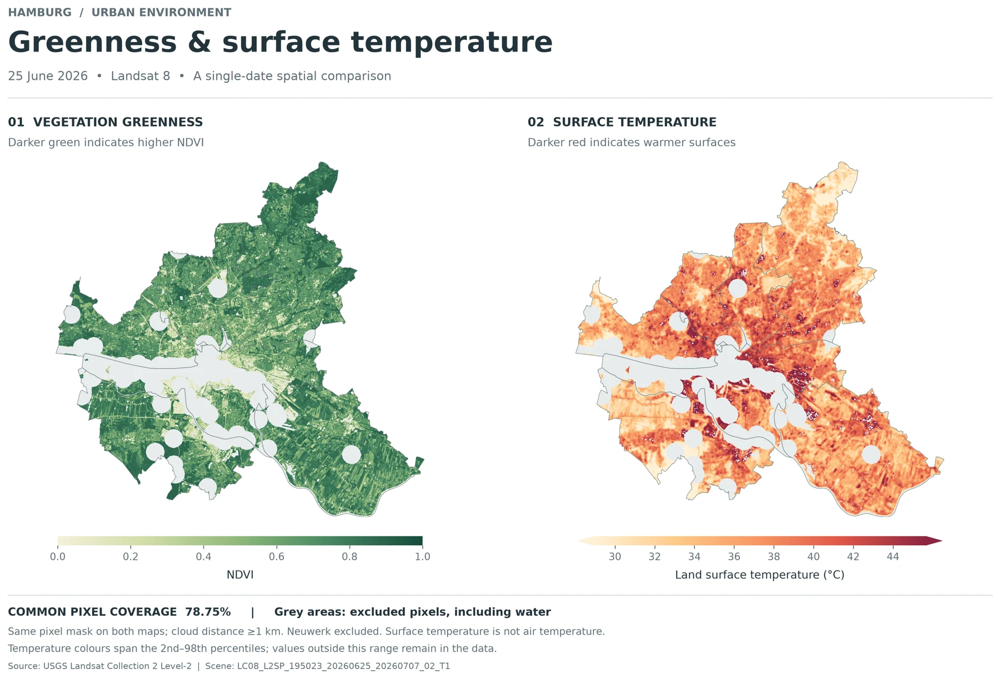
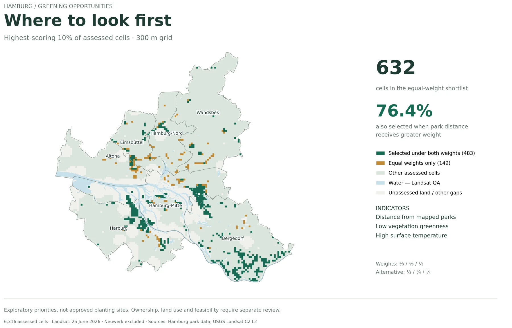

The question
Access to parks and patterns of vegetation and surface heat describe different aspects of a city’s green space. This project brings them together while keeping the meaning of each indicator explicit.
I combined vector preparation and cartography in QGIS with Python-based spatial and raster analysis, then built an interactive map for exploring individual grid cells.
The workflow
- Prepare and validate the geography. Correct the CRS assignment, select 951 park features and repair three invalid park geometries. Work in EPSG:25832 for metric analysis.
- Measure park proximity. Create 300 m and 500 m buffers, calculate district area outside buffer coverage and compare Python results with QGIS.
- Screen Landsat observations. Compare June and August image quality. Use 25 June 2026 for the main analysis, calculate NDVI and surface temperature, then aggregate valid paired pixels into 300 m cells.
- Build and challenge the shortlist. Combine park distance, low greenness and surface heat using equal percentile-rank weights. Compare the top 10% with a model that gives park distance more weight.
What the analysis shows
Park proximity varies considerably between districts. Area outside 500 m buffers ranges from 18.27% in Hamburg-Nord to 82.76% in Harburg. The citywide value is 56.22%.


Greener assessed cells tend to have cooler surfaces. Across the retained cells, the descriptive Pearson correlation is −0.894. A stricter quality-mask comparison changes the correlation little for the common sample; this is not evidence of causality or year-round conditions.


The weighting choice matters. The 76.4% overlap makes the selection’s sensitivity visible rather than presenting one ranking as definitive. These cells are places to investigate, not approved planting sites.
What the map does not tell us
Buffers measure straight-line proximity, not walking routes or park entrances. District statistics include water and do not describe the share of residents without park access.
The raster analysis excludes Neuwerk and uses a single acquisition date. Cloud and quality filtering leave uneven coverage. Unassessed areas are not necessarily low priority.
Greenness and temperature are strongly related, so including both may give extra influence to a shared pattern. Land ownership, existing use and planting feasibility require separate assessment.
Data & documentation
- District boundaries: Freie und Hansestadt Hamburg, LGV — ALKIS Verwaltungsgrenzen Hamburg.
- Parks: Freie und Hansestadt Hamburg, Behörde für Umwelt und Energie — Digitaler Grünplan / Kataster der öffentlichen Grünanlagen.
- Hamburg datasets: Datenlizenz Deutschland – Namensnennung 2.0. Derived outputs include selected and repaired geometries, buffers, aggregation and styling.
- Satellite imagery: USGS Landsat 8 Collection 2 Level-2, main acquisition 25 June 2026.
Explore the notebooks, quality checks, outputs and complete attribution on GitHub ↗